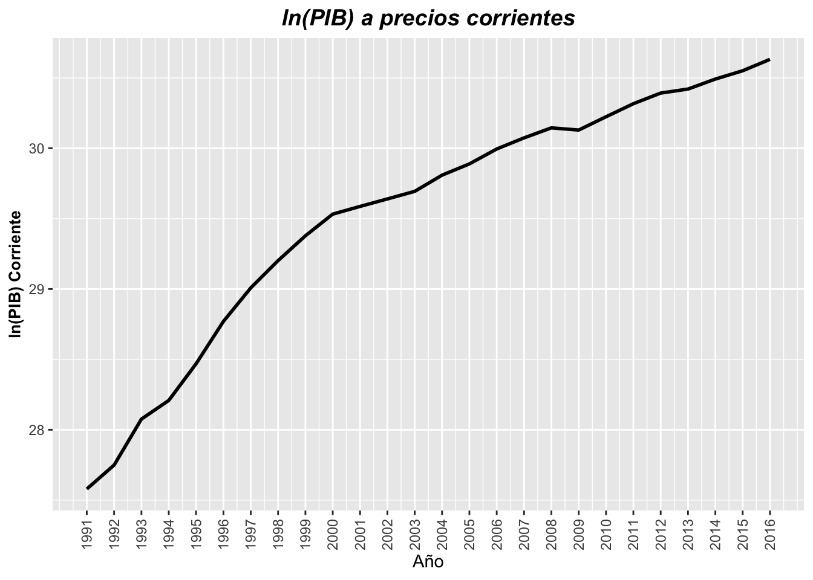
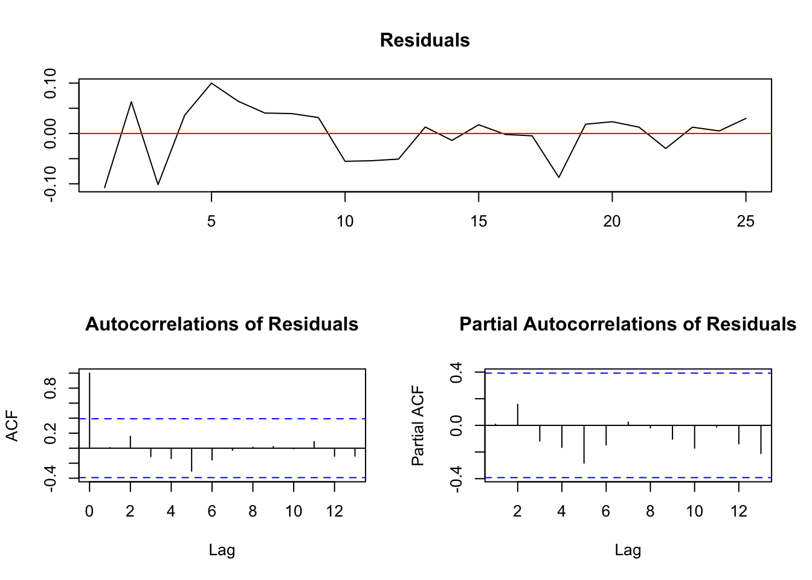
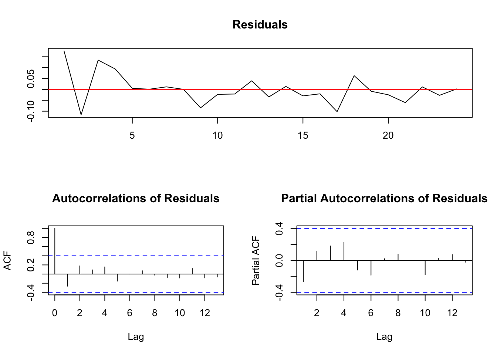
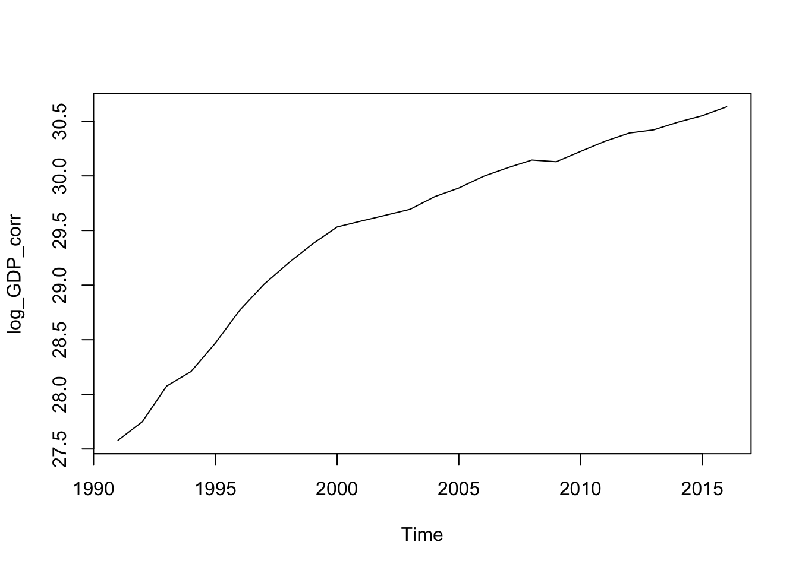
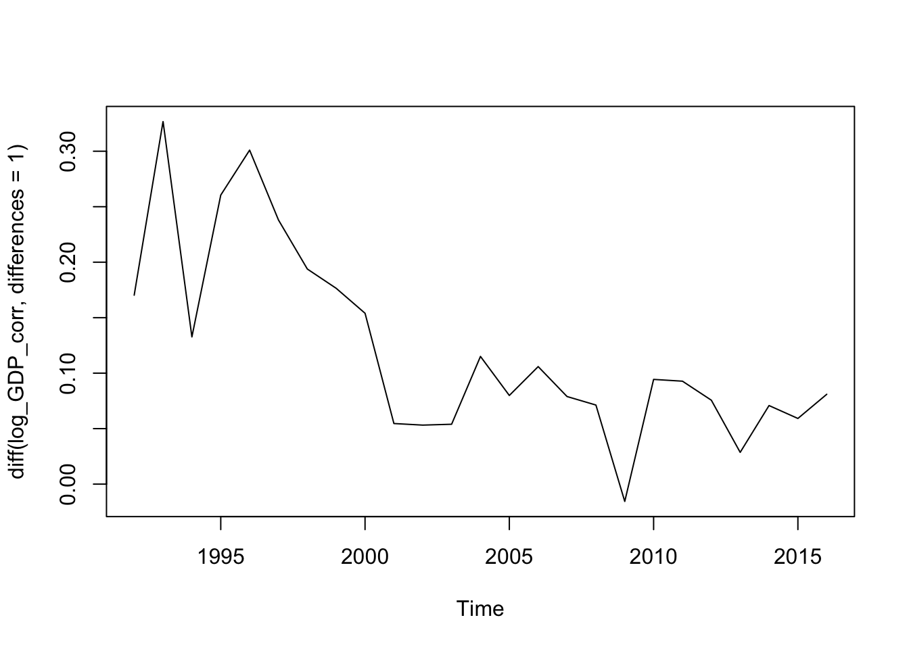
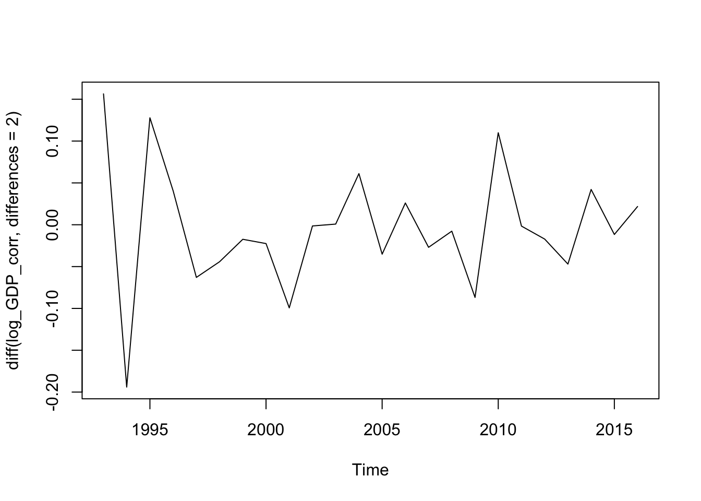
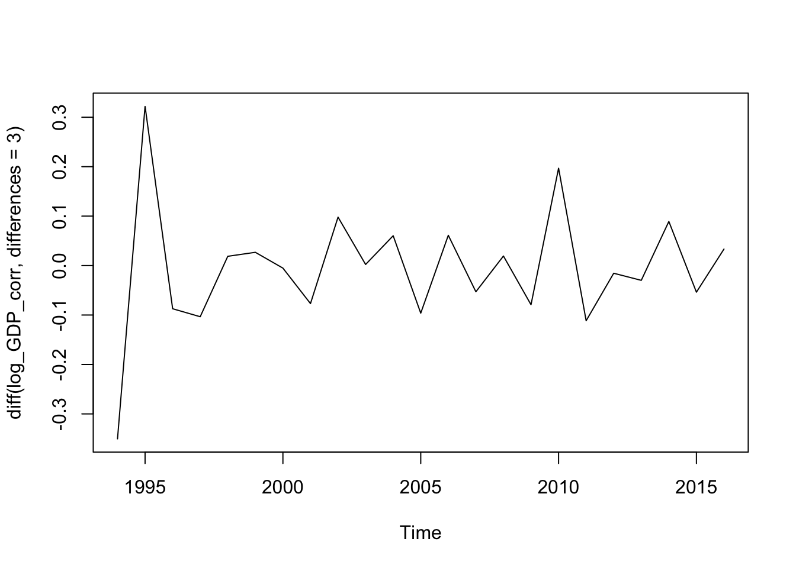

Chapter 5 Orden de Integración ln(PIB) a precios corrientes
gf1 <- grafica_serie(base_in = series_db,
eje_y = 'log_GDP_corriente',
titulo = 'ln(PIB) a precios corrientes',
titulo_y = 'ln(PIB) Corriente')
gf1
log_GDP_corr <- ts(series_db$log_GDP_corriente,start = 1991, end = 2016, frequency = 1)
log_GDP_corr.ct <- ur.df(log_GDP_corr,lags=0,type='trend')
summary(log_GDP_corr.ct)##
## ###############################################
## # Augmented Dickey-Fuller Test Unit Root Test #
## ###############################################
##
## Test regression trend
##
##
## Call:
## lm(formula = z.diff ~ z.lag.1 + 1 + tt)
##
## Residuals:
## Min 1Q Median 3Q Max
## -0.10752 -0.02976 0.01256 0.03166 0.09997
##
## Coefficients:
## Estimate Std. Error t value Pr(>|t|)
## (Intercept) 3.000017 1.190524 2.520 0.0195 *
## z.lag.1 -0.098808 0.042526 -2.323 0.0298 *
## tt 0.002790 0.005143 0.542 0.5930
## ---
## Signif. codes: 0 '***' 0.001 '**' 0.01 '*' 0.05 '.' 0.1 ' ' 1
##
## Residual standard error: 0.05449 on 22 degrees of freedom
## Multiple R-squared: 0.6335, Adjusted R-squared: 0.6002
## F-statistic: 19.01 on 2 and 22 DF, p-value: 1.603e-05
##
##
## Value of test-statistic is: -2.3235 54.527 19.0133
##
## Critical values for test statistics:
## 1pct 5pct 10pct
## tau3 -4.15 -3.50 -3.18
## phi2 7.02 5.13 4.31
## phi3 9.31 6.73 5.61plot(log_GDP_corr.ct)
El valor del estadístico-t para la hipótesis nula de \(\gamma=0\) es de -2.3235. El valor crítico de \(\tau\) a univel de significancia del 5% reportado en las tablas de Dickey-Fuller es de -3.50, por lo que no es posible rechazar la hipótesis nula de la existencia de una raíz unitaria dada la presencia del término constante (drift) y la tendencia temporal (trend).
Recordemos que el poder de la prueba puede verse reducido debido a la presencia de términos drift/trend innecesarios, por lo que probaremos si la presencia del término temporal es necesaria dada una raíz unitaria. Para ello utilizaremos el estadístico \(\phi_3\) que prueba la hipótesis conjunta \(a_2=\gamma=0\). Derivado de los resultados mostrados en las tablas anteriores, se puede rechazar la hipótesis nula, por lo que se tiene una raíz unitaria y también un término temporal.
Probaremos si la serie al ser diferenciada una vez más, alcanza la estacionaredad:
d_log_GDP_corr <- diff(log_GDP_corr)
d_log_GDP_corr.ct <- ur.df(d_log_GDP_corr,type="drift",lags=0)
summary(d_log_GDP_corr.ct)##
## ###############################################
## # Augmented Dickey-Fuller Test Unit Root Test #
## ###############################################
##
## Test regression drift
##
##
## Call:
## lm(formula = z.diff ~ z.lag.1 + 1)
##
## Residuals:
## Min 1Q Median 3Q Max
## -0.116748 -0.027785 -0.004129 0.012247 0.176952
##
## Coefficients:
## Estimate Std. Error t value Pr(>|t|)
## (Intercept) 0.04117 0.02466 1.669 0.1093
## z.lag.1 -0.36251 0.16375 -2.214 0.0375 *
## ---
## Signif. codes: 0 '***' 0.001 '**' 0.01 '*' 0.05 '.' 0.1 ' ' 1
##
## Residual standard error: 0.06879 on 22 degrees of freedom
## Multiple R-squared: 0.1822, Adjusted R-squared: 0.145
## F-statistic: 4.901 on 1 and 22 DF, p-value: 0.03752
##
##
## Value of test-statistic is: -2.2138 2.4855
##
## Critical values for test statistics:
## 1pct 5pct 10pct
## tau2 -3.75 -3.00 -2.63
## phi1 7.88 5.18 4.12plot(d_log_GDP_corr.ct)
d_log_GDP_corr <- diff(log_GDP_corr,differences = 2)
d_log_GDP_corr.ct <- ur.df(d_log_GDP_corr,type="none",lags=0)
summary(d_log_GDP_corr.ct)##
## ###############################################
## # Augmented Dickey-Fuller Test Unit Root Test #
## ###############################################
##
## Test regression none
##
##
## Call:
## lm(formula = z.diff ~ z.lag.1 - 1)
##
## Residuals:
## Min 1Q Median 3Q Max
## -0.11940 -0.04622 -0.01456 0.01799 0.10147
##
## Coefficients:
## Estimate Std. Error t value Pr(>|t|)
## z.lag.1 -1.4770 0.1629 -9.067 6.95e-09 ***
## ---
## Signif. codes: 0 '***' 0.001 '**' 0.01 '*' 0.05 '.' 0.1 ' ' 1
##
## Residual standard error: 0.05809 on 22 degrees of freedom
## Multiple R-squared: 0.7889, Adjusted R-squared: 0.7793
## F-statistic: 82.21 on 1 and 22 DF, p-value: 6.954e-09
##
##
## Value of test-statistic is: -9.0669
##
## Critical values for test statistics:
## 1pct 5pct 10pct
## tau1 -2.66 -1.95 -1.6Por lo que la serie al ser diferenciada dos veces alcanza estacionariedad. Por lo tanto, la serie del logaritmo natural del PIB a precios corrientes es \(I(2)\) y es de la forma \(\nabla y_{t} = a_0 + \gamma y_{t-1} + a_2 t + \epsilon_t\).
plot(log_GDP_corr)
plot(diff(log_GDP_corr, differences = 1))
plot(diff(log_GDP_corr, differences = 2))
plot(diff(log_GDP_corr, differences = 3))
mean(log_GDP_corr)## [1] 29.53691mean(diff(log_GDP_corr,differences = 1))## [1] 0.1221156mean(diff(log_GDP_corr,differences = 2))## [1] -0.003721427mean(diff(log_GDP_corr,differences = 3))## [1] -0.00585276var(log_GDP_corr)## [1] 0.8104397var(diff(log_GDP_corr, differences = 1))## [1] 0.007426465var(diff(log_GDP_corr, differences = 2))## [1] 0.00553448var(diff(log_GDP_corr, differences = 3))## [1] 0.01594711